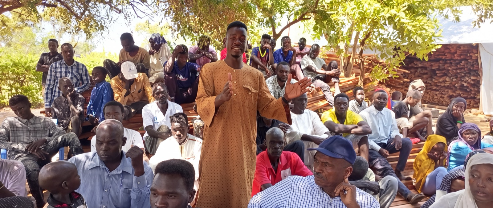

Week two · what a monthly gift provides
One person, all the way through the two weeks.
Everything one person needs to go from the day they walk in to the day they walk out with a certificate in their hand.
Two weeks of teaching
All day, every day, for two full weeks of learning and healing together.
One-on-one counseling
After the teaching ends, someone sits with them through the deepest part of the healing.
Their own curriculum
Written for Africa, in their own language, theirs to keep long after the class moves on.
Their certificate
Completion, named and celebrated. Look at the joy in the faces holding them.
Getting our missionaries there
Sent out two by two, just as Jesus did. Fuel into villages other people do not drive to, and a place to stay for the full two weeks.
Madina is one of thousands.
For more than twenty years, our field missionaries have been carrying trauma healing across Africa, into places most people will never see. Little villages of grass and tin at the end of roads no one else drives. Refugee settlements. Police barracks. Government offices. Wherever there are wounded hearts, they go.
Some of the people in these photos walked in barefoot. Some came in uniform. In 2022, we watched top generals of the South Sudanese army kneel with their hands lifted high to receive the same teaching Madina received. One of the nation’s vice presidents sent his entire executive staff through it.
We are all traumatized. A vice president of South Sudan
And when the country’s top police commissioner shared that most of South Sudan’s suicides come from inside his own police force, our missionaries began walking alongside the police and their chaplains, training them in trauma healing.
Trauma does not check what you are wearing. Neither does the love of Jesus. From the tin hut to the government office, our missionaries carry the same gentle message into every one of these rooms: you are not what happened to you. You are a beloved child of God.


One person a month. Twelve a year. That is what steady giving provides that a single gift cannot: a next one.
Become a monthly partner